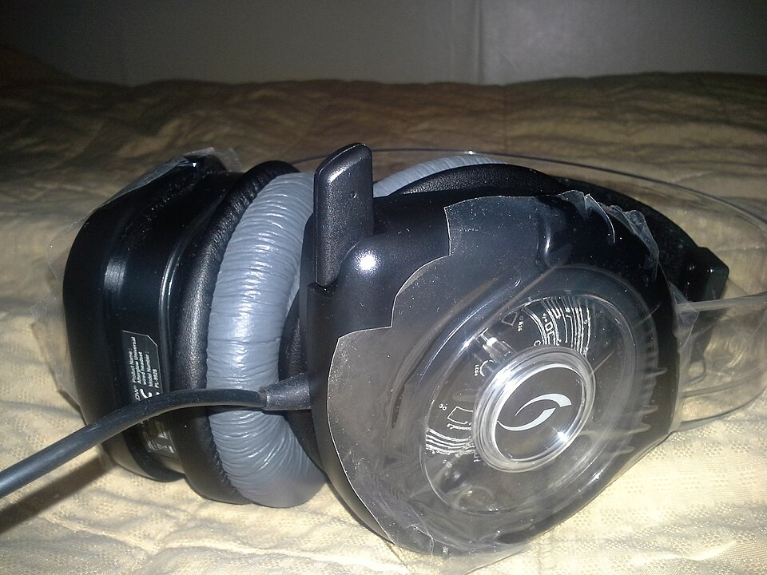
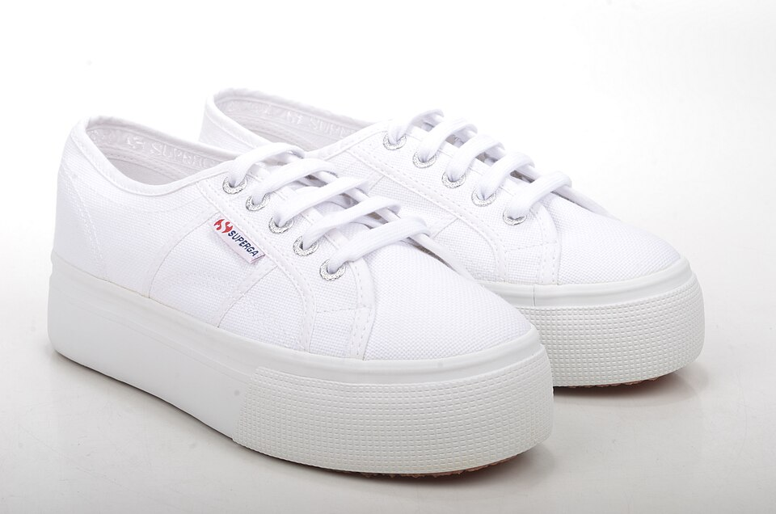
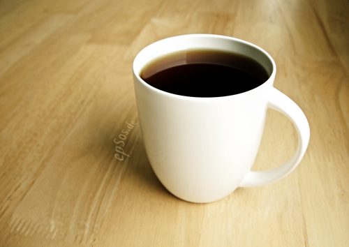
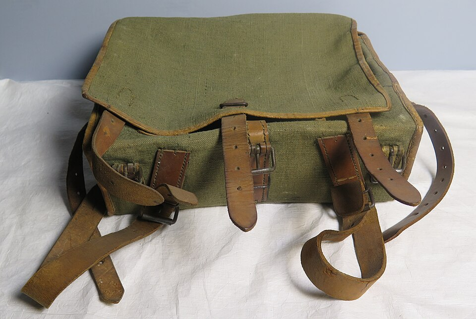
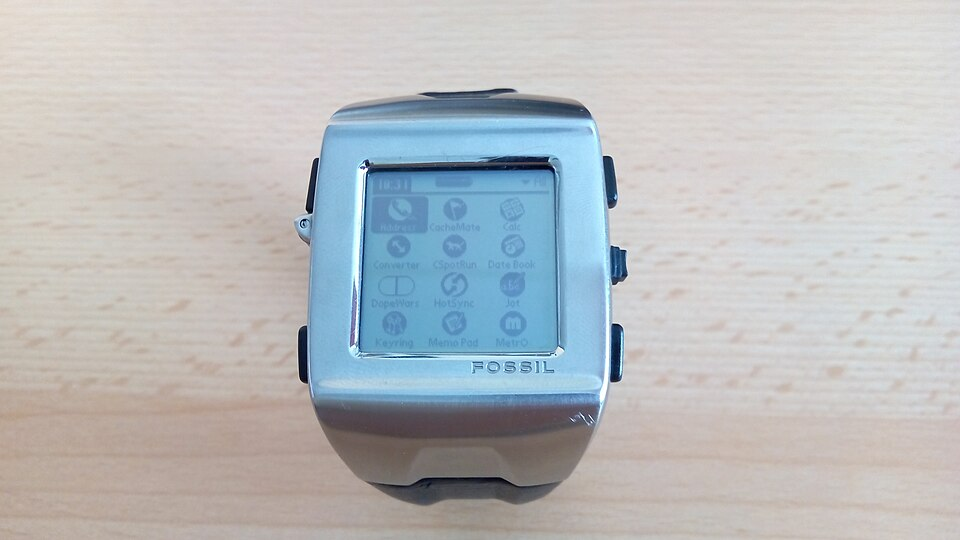
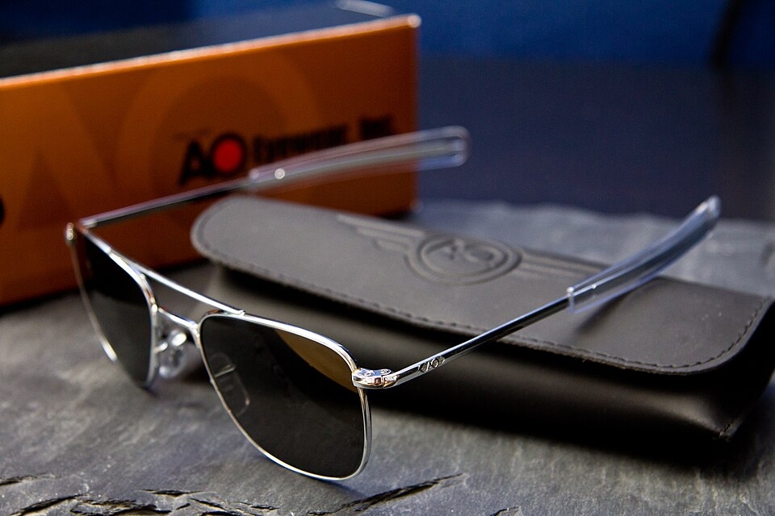
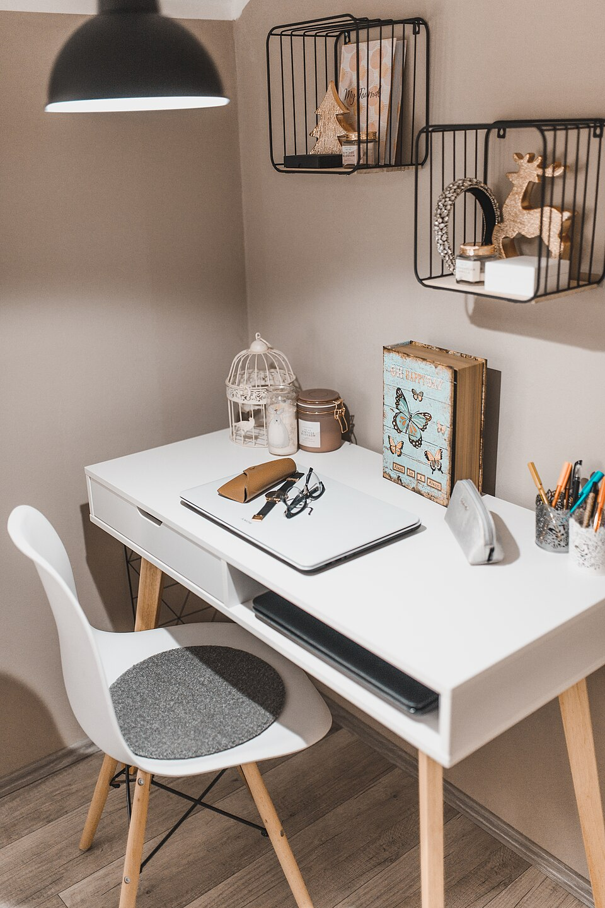
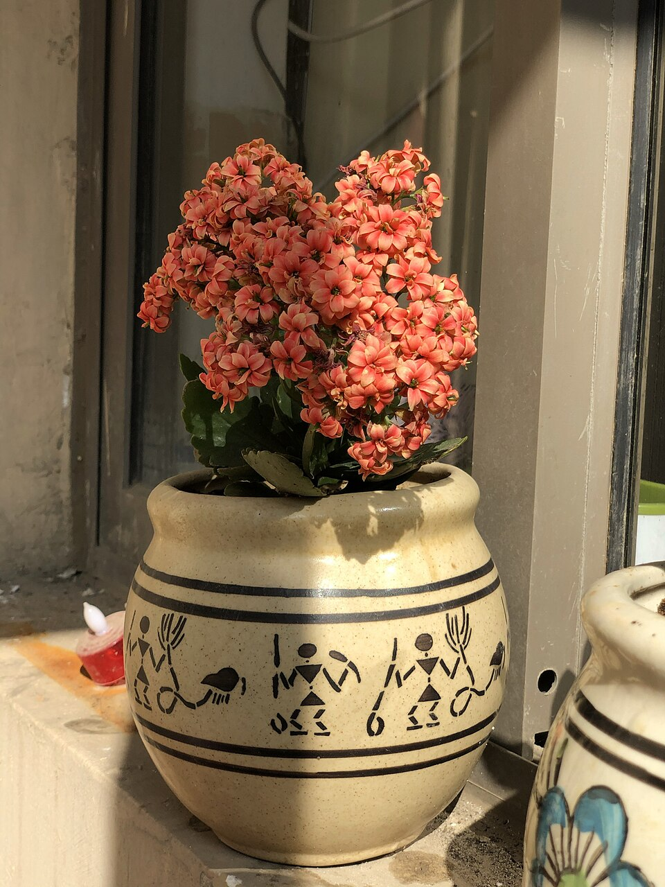
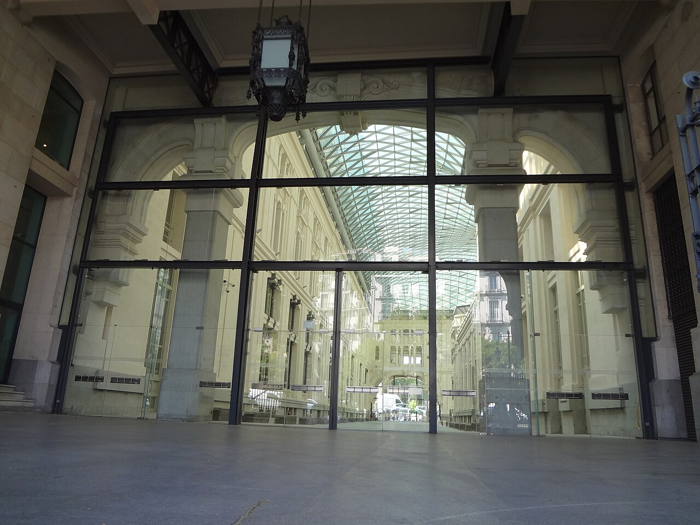

Afterglow AGU.1 Wireless Headphones.jpg
Автор: Seqqis
Ліцензія: CC BY-SA 3.0
Джерело на Wikimedia Commons →Усі фотографії — з Wikimedia Commons, за вільними ліцензіями CC0 / CC BY / CC BY-SA. Нижче — автор і джерело кожного знімка.

Afterglow AGU.1 Wireless Headphones.jpg
Автор: Seqqis
Ліцензія: CC BY-SA 3.0
Джерело на Wikimedia Commons →
Superga COTW LINEA UP & DOWN Sneaker mit Plateau 2790A Canvas weiß (white) (1).jpg
Автор: SPERA.de Designerschuhe, Taschen und Accessoires
Ліцензія: CC BY 2.0
Джерело на Wikimedia Commons →
Black Coffee and Tea in White Cup is Hot.png
Автор: epSos.de
Ліцензія: CC BY 2.0
Джерело на Wikimedia Commons →
Backpack (AM 650840).jpg
Автор: Unknown authorUnknown author
Ліцензія: CC BY 4.0
Джерело на Wikimedia Commons →
The smallest Palm PDA (34651142366).jpg
Автор: Jiri Brozovsky from Ostrava, Czech Republic
Ліцензія: CC BY 2.0
Джерело на Wikimedia Commons →
American Optical Original Pilot Aviator sunglasses.jpg
Автор: Guy Sie
Ліцензія: CC BY-SA 2.0
Джерело на Wikimedia Commons →
A white desk is arranged in a cozy room.jpg
Автор: Shixart1985
Ліцензія: CC BY 2.0
Джерело на Wikimedia Commons →
Flaming Katy in a Ceramic Pot 2.jpg
Автор: Slyronit
Ліцензія: CC BY-SA 4.0
Джерело на Wikimedia Commons →
Modern glass wall at the Old Post Office in Madrid, Spain.JPG
Автор: David Adam Kess
Ліцензія: CC BY-SA 4.0
Джерело на Wikimedia Commons →